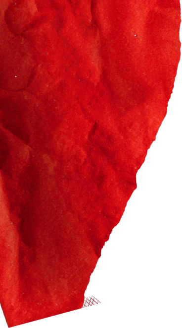
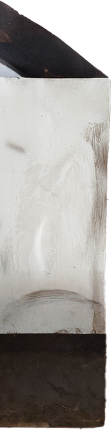
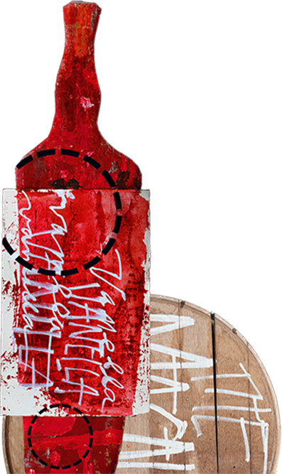
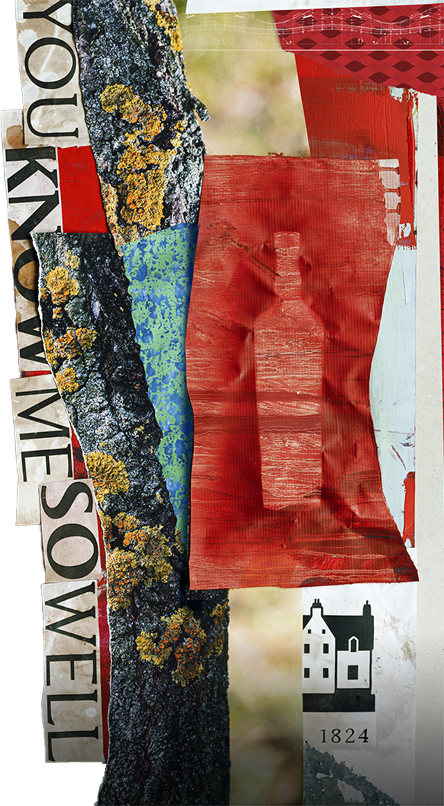
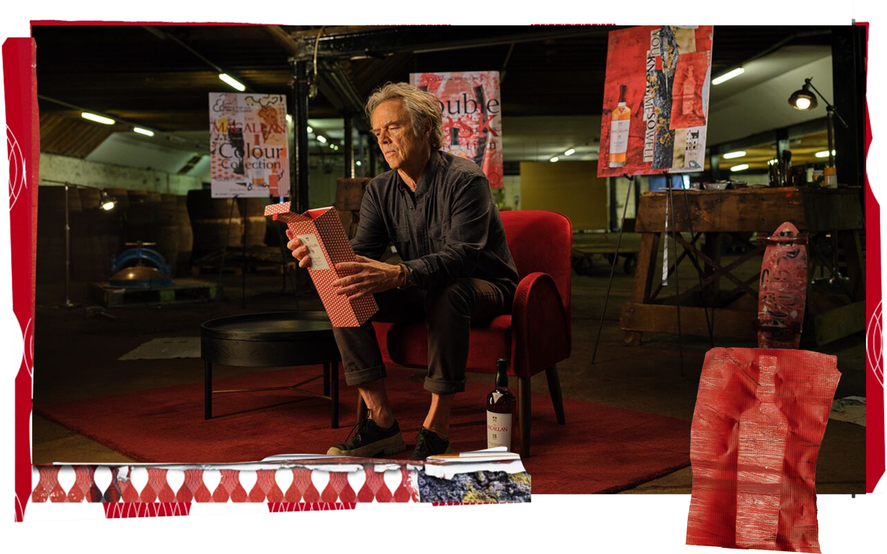
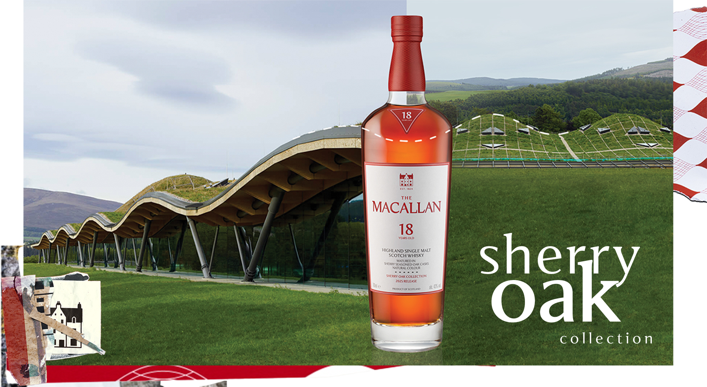
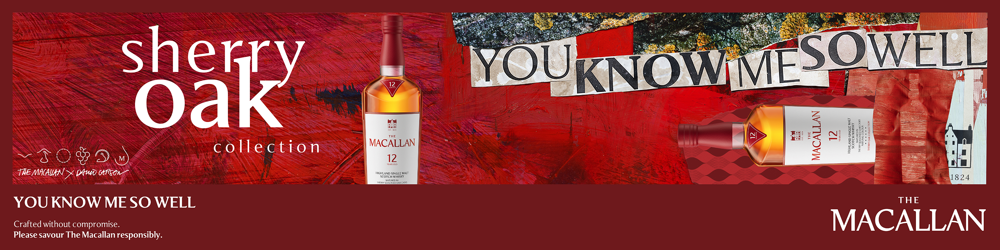

Timeless Collections:
Ngôn ngữ thị giác mới trong diện mạo của The Macallan
Trong lần hợp tác cùng nhà thiết kế đồ họa danh tiếng David Carson, The Macallan chính thức giới thiệu ngôn ngữ thị giác trong diện mạo mới của Timeless Collections. Lần làm mới này tập trung tinh chỉnh hệ thống nhận diện nhằm giúp câu chuyện về di sản, thùng gỗ sồi và các nốt hương được thể hiện trực quan hơn, trong khi phong vị trứ danh của The Macallan vẫn được giữ nguyên.





Trong lần làm mới này, The Macallan lựa chọn cách tiếp cận tiết chế và có chọn lọc, đặt trọng tâm vào việc tinh chỉnh các yếu tố thị giác để làm nổi bật những giá trị chế tác đã được gìn giữ suốt hơn hai thế kỷ. Ngôn ngữ thị giác mới không nhằm tạo ra sự đối lập, mà đóng vai trò như một lớp diễn giải giúp bản sắc của Timeless Collections trở nên nhất quán, gần gũi và dễ nhận diện hơn trong bối cảnh đương đại.
Kiến trúc của Nhà máy chưng cất mới của The Macallan tiếp tục là nguồn cảm hứng trong lần làm mới này. Trên phần vai chai được tinh chỉnh bằng chi tiết tạo hình chọn lọc, gợi nhắc đường lượn sóng của mái vòm nhà máy, qua đó tạo nên dấu hiệu nhận diện thị giác gắn liền với không gian nơi mạch nha đơn cất được chế tác.
Cũng ở phần vai chai, nhãn hình tam giác được giữ lại và tinh giản, đại diện cho vùng Sherry Triangle tại Andalusia, Tây Ban Nha, nơi gắn liền với rượu sherry và cũng là nguồn gốc của những thùng gỗ sồi ướp sherry đã góp phần định hình màu sắc tự nhiên và phong vị trứ danh đặc trưng của The Macallan qua nhiều thế hệ.

Diện mạo dẫn dắt
Diện mạo dẫn dắt nhận diện và trải nghiệm của từng bộ sưu tập
Ở phiên bản hiện tại, Timeless Collections còn được thể hiện rõ qua hệ màu riêng trên vỏ hộp của từng bộ sưu tập, giúp người thưởng thức dễ dàng phân biệt và định vị phong cách mạch nha đơn cất phù hợp.
Trong diện mạo mới, hệ màu được sử dụng như một công cụ nhận diện rõ ràng giữa các bộ sưu tập trong Timeless Collections. Sherry Oak được xác định bằng sắc đỏ trầm, Double Cask sử dụng bảng màu kết hợp, trong khi Colour Collection mang sắc thái tươi sáng hơn. Cách phân tách này giúp người thưởng thức dễ dàng phân biệt từng dòng mạch nha đơn cất ngay từ cái nhìn đầu tiên.

Phần nhãn chai ở mặt sau được bổ sung biểu tượng loại thùng gỗ, sử dụng hình ảnh trực quan để diễn giải các nốt hương chủ đạo, đồng thời làm rõ tỷ lệ đóng góp của thùng gỗ sồi châu Âu và thùng gỗ sồi Mỹ trong việc định hình cấu trúc hương vị của từng dòng mạch nha đơn cất. Mã QR xác thực được tích hợp nhằm hỗ trợ truy xuất nguồn gốc sản phẩm, phục vụ mục tiêu minh bạch và xác thực thông tin.
Những tinh chỉnh về nhận diện trong Timeless Collections góp phần dẫn dắt trải nghiệm thưởng thức một cách trực quan hơn, từ đó giúp người yêu whisky khám phá từng dòng mạch nha đơn cất của The Macallan một cách mạch lạc và liền mạch. Từ ấn tượng thị giác ban đầu trên vỏ hộp, cảm nhận khi cầm nắm thân chai, khả năng truy xuất nguồn gốc qua mã QR, cho đến việc quan sát sắc màu tự nhiên của whisky trong chai, mỗi chi tiết đều đóng vai trò như một lớp dẫn dắt nhẹ nhàng trước khi người thưởng thức thực sự chạm đến hương vị. Trong cách tiếp cận này, diện mạo được tinh chỉnh không thay thế trải nghiệm thưởng thức, mà làm giàu thêm hành trình cảm nhận, để khoảnh khắc nhấp môi đầu tiên trở nên trọn vẹn hơn với chất vị mạch nha đơn cất trứ danh.
